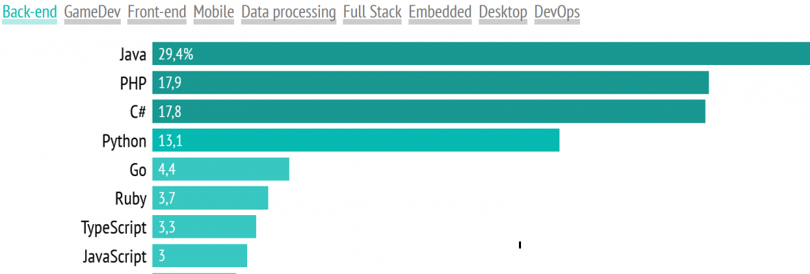

История создания

Проект C# был начат в декабре 1998 и получил кодовое название COOL (C-style Object Oriented Language). Версия 1.0 была анонсирована вместе с платформой .NET в июне 2000 года, тогда же появилась и первая общедоступная бета-версия; C# 1.0 окончательно вышел вместе с Microsoft Visual Studio .NET в феврале 2002 года. Первая версия C# напоминала по своим возможностям Java 1.4, несколько их расширяя: так, в C# имелись свойства (выглядящие в коде как поля объекта, но на деле вызывающие при обращении к ним методы класса), индексаторы (подобные свойствам, но принимающие параметр как индекс массива), события, делегаты, циклы foreach, структуры, передаваемые по значению, автоматическое преобразование встроенных типов в объекты при необходимости (boxing), атрибуты, встроенные средства взаимодействия с неуправляемым кодом (DLL, COM) и прочее. Кроме того, в C# решено было перенести некоторые возможности C++, отсутствовавшие в Java: беззнаковые типы, перегрузку операторов (с некоторыми ограничениями, в отличие от C++), передача параметров в метод по ссылке, методы с переменным числом параметров, оператор goto (с ограничениями). Также в C# оставили ограниченную возможность работы с указателями — в местах кода, специально обозначенных словом unsafe и при указании специальной опции компилятору.
Краткий обзор
-
Описание
C# (произносится как "си шарп") — современный объектно-ориентированный и типобезопасный язык программирования. C# позволяет разработчикам создавать разные типы безопасных и надежных приложений, выполняющихся в .NET. C# относится к широко известному семейству языков C, и покажется хорошо знакомым любому, кто работал с C, C++, Java или JavaScript. Здесь представлен обзор основных компонентов языка C# 8 и более ранних версий. Если вы хотите изучить язык с помощью интерактивных примеров, рекомендуем поработать с вводными руководствами по C# -
Сферы использования
Если смотреть по отрасли применения, то ситуация другая: в бэкенд-программировании C# в 2022 году занимал третьем месте после PHP, также C# — являлся популярным языком в геймдеве. -
Структура программы
Основными понятиями Организации в C# являются программы, пространства имен, типы, члены и сборки. В программе объявляются типы, которые содержат члены. Эти типы можно организовать в пространства имен. Примерами типов являются классы, структуры и интерфейсы. К членам относятся поля, методы, свойства и события. При компиляции программы на C# упаковываются в сборки.Сборки обычно имеют расширение .exe файла или .dll , в зависимости от того, реализуют ли они .exe или библиотекисоответственно.

Пример кода
-
Ниже представлен код классической программы «Hello world» на C# для консольного приложения:
-
Ниже представлен код классической программы «Hello world» на C# для консольного приложения:
namespace WindowsForms; public class Program { [STAThread] public static void Main() => new DemoForm().ShowDialog(); } public class DemoForm : Form { Label label = new Label(); public DemoForm() { label.Text = "Hello World!"; this.Controls.Add(label); this.StartPosition = FormStartPosition.CenterScreen; this.BackColor = Color.White; this.FormBorderStyle = FormBorderStyle.Fixed3D; } }

| C# | Python | |
|---|---|---|
| Простота | Нет | ДА |
| Написание скриптов | Только в IDE | В любой среде |
| Библиотеки | Мало библиотек | Много библиотек |
| Производительность | Высокая | Низкая |